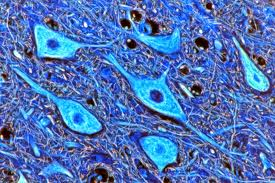

WELCOME TO M BIOLOGY.COM

|
 The brains of all species are composed primarily of two broad classes of cells: neurons and glial cells. Glial cells (also known as glia or neuroglia) come in several types, and perform a number of critical functions, including structural support, metabolic support, insulation, and guidance of development. Neurons, however, are usually considered the most important cells in the brain.[7] The property that makes neurons unique is their ability to send signals to specific target cells over long distances.[8] They send these signals by means of an axon, which is a thin protoplasmic fiber that extends from the cell body and projects, usually with numerous branches, to other areas, sometimes nearby, sometimes in distant parts of the brain or body. The length of an axon can be extraordinary: for example, if a pyramidal cell of the cerebral cortex were magnified so that its cell body became the size of a human body, its axon, equally magnified, would become a cable a few centimeters in diameter, extending more than a kilometer.[9] These axons transmit signals in the form of electrochemical pulses called action potentials, which last less than a thousandth of a second and travel along the axon at speeds of 1–100 meters per second. Some neurons emit action potentials constantly, at rates of 10–100 per second, usually in irregular patterns; other neurons are quiet most of the time, but occasionally emit a burst of action potentials.[10] Axons transmit signals to other neurons by means of specialized junctions called synapses. A single axon may make as many as several thousand synaptic connections with other cells.[11] When an action potential, traveling along an axon, arrives at a synapse, it causes a chemical called a neurotransmitter to be released. The neurotransmitter binds to receptor molecules in the membrane of the target cell.[12] Synapses are the key functional elements of the brain.[13] The essential function of the brain is cell-to-cell communication, and synapses are the points at which communication occurs. The human brain has been estimated to contain approximately 100 trillion synapses;[14] even the brain of a fruit fly contains several million.[15] The functions of these synapses are very diverse: some are excitatory (excite the target cell); others are inhibitory; others work by activating second messenger systems that change the internal chemistry of their target cells in complex ways.[13] A large fraction of synapses are dynamically modifiable; that is, they are capable of changing strength in a way that is controlled by the patterns of signals that pass through them. It is widely believed that activity-dependent modification of synapses is the brain's primary mechanism for learning and memory.[13] Most of the space in the brain is taken up by axons, which are often bundled together in what are called nerve fiber tracts. Many axons are wrapped in thick sheaths of a fatty substance called myelin, which serves to greatly increase the speed of signal propagation. Myelin is white, so parts of the brain filled exclusively with nerve fibers appear as light-colored white matter, in contrast to the darker-colored grey matter that marks areas with high densities of neuron cell bodies.[16] |